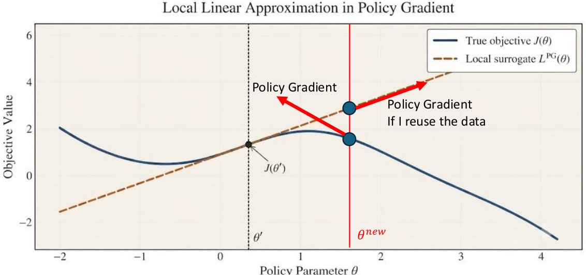
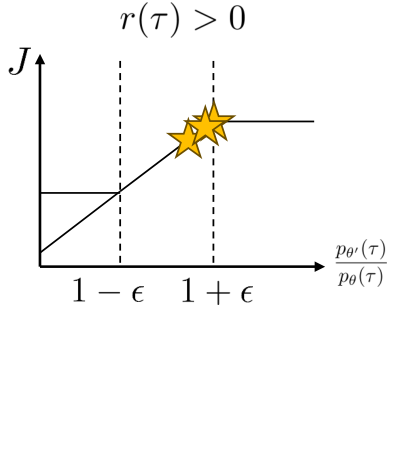
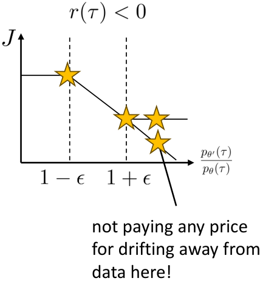
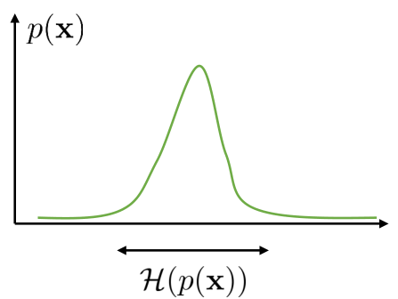
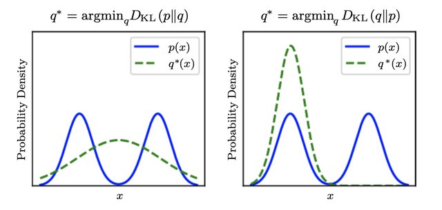
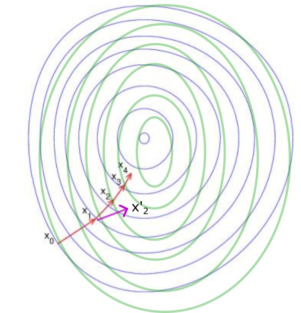
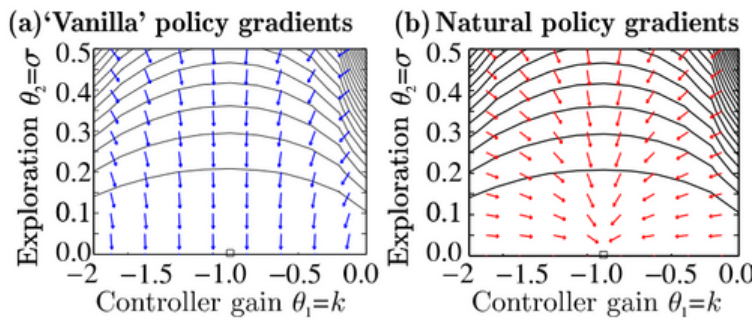
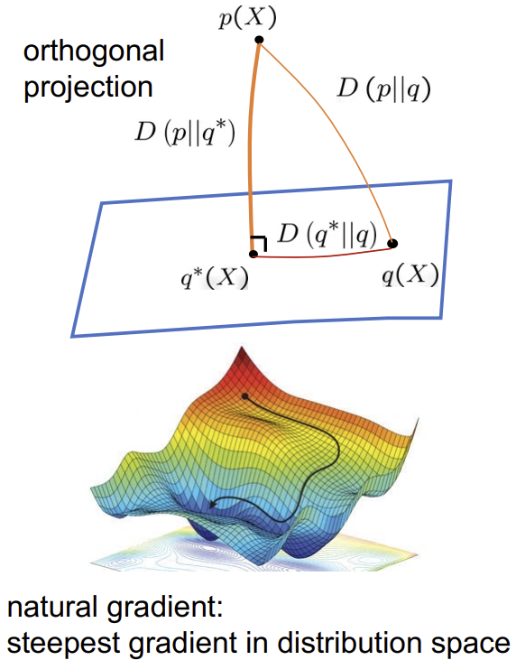

Avik De
Adjunct Associate Professor, Electrical and Systems Engineering, University of Pennsylvania
Chief Science Officer, Ghost Robotics
Oct 2026
We want to calculate
If we have a deterministic policy and deterministic dynamics, what is the expectation over?
Goal:
Problem:
Idea:

With J(\theta):=\mathbb{E}_{s_0}[V^\theta(s_0)]
We want this to be positive (minibatch epochs should improve objective):
Problem: Samples are with old policy \tau\sim p_{\theta}
In the last class, we got to this point:
K epochs of minibatch updates:
Even ignoring the state ratio issue,
Will this work?
If we take many steps on the objective,
Root cause: we “trust” the sampled advantage too much
We will discuss how algorithms address this later today.
But first…
Problem: We cannot compute it directly – why?
Claim: \pi_\theta close to \pi_{\theta'} ==> p_{\theta}(s_t) close to p_{\theta'}(s_t) ==> State ratio ~ 1
Proof:
What is \pi_{\theta}(a_t \neq \pi_\theta(s_t)) = ?
Based on Sergey Levine CS185 notes
Claim: \pi_\theta close to \pi_{\theta'} ==> p_{\theta}(s_t) close to p_{\theta'}(s_t)
Proof (contd):
Claim: \pi_\theta close to \pi_{\theta'} ==> p_{\theta}(s_t) close to p_{\theta'}(s_t)
Proof (contd):
\le 1-(1-\epsilon)^t \le \epsilon t ~~ \blacksquare
Claim: \pi_\theta close to \pi_{\theta'} ==> p_{\theta}(s_t) close to p_{\theta'}(s_t)
Sketch of proof:
Introduce a new metric: TVD = total variation distance
“\pi_\theta close to \pi_{\theta'}”
We can prove that this means (not going to prove): P\big(\pi_{\theta'}(\cdot \mid s_t) \neq \pi_\theta(\cdot \mid s_t)\big) \le \epsilon.
Remember discrete case: \pi_{\theta'}(a_t \neq \pi_\theta(s_t)) \le \epsilon. Proof follows the same way.
If D_{\mathrm{TV}}(p_{\theta}, p_{\theta'}) is small, we can show (not going to prove)
Let’s set
Step back: \pi_\theta close to \pi_{\theta'} ==> Improvement in objective during minibatch epochs!
A_t is not resampled for new policy, so minibatch epochs will keep pushing r_t
What happens when ϵ is large?
What happens when ϵ = 0?

Image from Sergey Levine CS185 notes
Don’t let a single advantage sample continually change the policy in its favor.

Image from Sergey Levine CS185 notes
What if \theta' wants to go toward the right?
Why do we not need to worry about the ratio “running away” in this case?
Image from Sergey Levine CS185 notes
Will all ratios remain between 1−ϵ and 1+ϵ?
No, because of the reason from the previous slide
Image from Sergey Levine CS185 notes

Image from Sergey Levine CS185 notes
Often implemented as Actor/Critic (estimate value function -> use for advantage)
Minibatch epoch \theta' updates:
Chaotic or stochastic systems, where
Systems where data collection is moderately difficult1
Per (Engstrom et al., 2020), a lot of PPO’s success is due to “tricks” beyond the key paper ideas.
Does PPO actually constrain the divergence between old and new policies?
Small-sample issues
Non-monotonic improvement
Small \epsilon can also result in no improvement (gradient clipped to 0).
Failure example (Engstrom et al., 2020)
Let’s try to more systematically enforce the trust region.
Not symmetric!
Can you see why?

Can you see the “mode covering”?
Example from (Goodfellow, 2016)
Taylor Series approximation of D_{\mathrm{KL}}(p_\theta || p_{\theta'}) when the two distributions are close
Theorem:
where F is the Fisher Information Metric
Expected outer product of score vector \nabla_\theta \log p_{\theta}(x)
Which should we use?
Example from (Goodfellow, 2016)
Pinsker’s Inequality: D_{\mathrm{TV}}(\pi_\theta, \pi_{\theta'}) \le \sqrt{\frac{1}{2} D_{\mathrm{KL}}(\pi_\theta || \pi_{\theta'})}
Minibatch epoch \theta' updates:
Using average KL over batch:
PPO-KL was introduced in the same paper but has no clipping, and adds the KL penalty. PPO-Clip is the more common form.
Policy gradient vector: \theta' = \theta + \alpha \hat g
Notice that
Gradient purpose:

Example of why it matters (Peters & Schaal, 2008):

Vanilla PG:
What we want:

Image from https://noneq.c.u-tokyo.ac.jp/Stochastic_Thermodynamics_III/wp-content/uploads/2022/06/WOST-III_tutorial_oizumi.pdf
Constrained problem: \max_{\theta'} \bar A(\theta') such that D_{\mathrm{KL}}(\pi_\theta \| \pi_{\theta'}) \le \epsilon_\mathrm{KL} (forward KL)
Make the inequality an equality, add it to the objective with multiplier \beta:
Dual gradient descent, alternating:
How it works:
Based on Sergey Levine CS185 notes
NPG (fixed step): \theta' = \theta + \alpha F^{-1} g, where g = \nabla L
Penalized TRPO loss, using the quadratic KL:
Gradient w.r.t. \theta' (at \theta' \approx \theta):
Set \nabla_{\theta'}L = 0:
(Schulman et al., 2015) show that